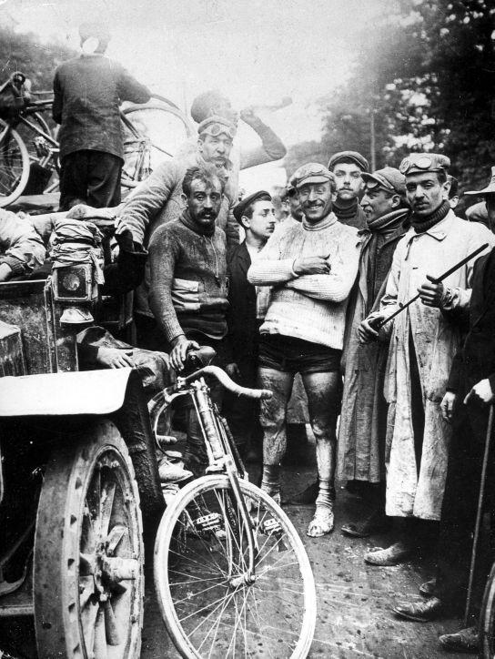

The first Tour de France was staged in 1903. The plan was a five-stage race from 31 May to 5 July, starting in Paris and stopping in Lyon, Marseille, Bordeaux and Nantes before returning to Paris. Toulouse was added later to break the long haul across southern France from the Mediterranean to the Atlantic. Stages would go through the night and finish next afternoon, with rest days before riders set off again. But this proved too daunting and the costs too great for most and only 15 competitors had entered. Desgrange had never been wholly convinced and he came close to dropping the idea. Instead, he cut the length to 19 days, changed the dates to 1 to 19 July, and offered a daily allowance to those who averaged at least 20 km/h on all the stages, equivalent to what a rider would have expected to earn each day had he worked in a factory. He also cut the entry fee from 20 to 10 francs and set the first prize at 12,000 francs and the prize for each day's winner at 3,000 francs. The winner would thereby win six times what most workers earned in a year. That attracted between 60 and 80 entrants – the higher number may have included serious inquiries and some who dropped out – among them not just professionals but amateurs, some unemployed, some simply adventurous.
Desgrange seems not to have forgotten the Dreyfus Affair that launched his race and raised the passions of his backers. He announced his new race on 1 July 1903 by citing the writer Émile Zola, whose open letter in which every paragraph started" J'accuse ..." led to Dreyfus's acquittal, establishing the florid style he used henceforth.
The first Tour de France started almost outside the Café Reveil-Matin at the junction of the Melun and Corbeil roads in the village of Montgeron. It was waved away by the starter, Georges Abran, at 3:16 p.m. on 1 July 1903. L'Auto hadn't featured the race on its front page that morning.
Among the competitors were the eventual winner, Maurice Garin, his well-built rival Hippolyte Aucouturier, the German favourite Josef Fischer, and a collection of adventurers including one competing as "Samson".
Many riders dropped out of the race after completing the initial stages as the physical effort the tour required was just too much. Only a mere 24 entrants remained at the end of the fourth stage. The race finished on the edge of Paris at Ville d'Avray, outside the Restaurant du Père Auto, before a ceremonial ride into Paris and several laps of the Parc des Princes. Garin dominated the race, winning the first and last two stages, at 25.68 km/h. The last rider, Millocheau, finished 64h 47m 22s behind him.
L'Auto's mission was accomplished as throughout the race circulation of the publication doubled, making the race something much larger than Desgrange had ever hoped for.